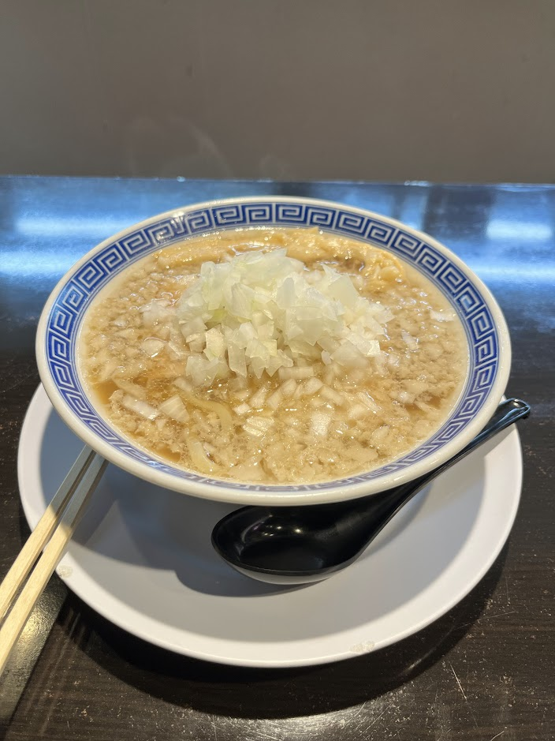

Naoji - Seabura Chuuka Soba

- Price: ¥980
- Rating: 8.25/10
- Last date I had it : 2025-01-15
- Review: this is chuuka soba that has a topping of raw diced onions and pork back fat (seabura) pieces. you’d imagine it to be very filling and heavy, but because of the light broth and raw onions, it cuts thru the fat well, leading to a very strong impactful bowl without weighing you down. very nice, though I wasn’t a huge fan of how the other toppings (chashu + menma) were.